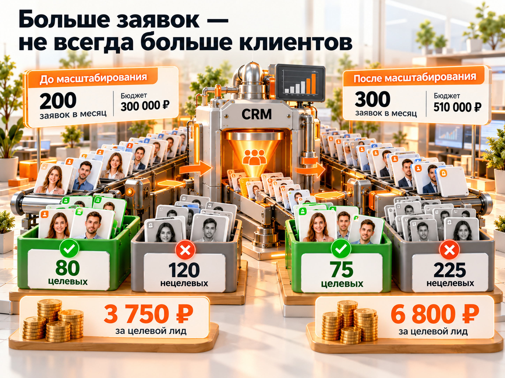

Блог о платном трафике
Масштабирование Яндекс Директа: как увеличить заявки и сохранить рентабельность
Масштабирование Яндекс Директа - это увеличение количества заявок и продаж при сохранении приемлемой стоимости привлечения клиента. Для этого нужно сначала проверить запас спроса и экономику рекламы, затем постепенно увеличивать объём в работающих кампаниях и отдельно тестировать новые источники трафика. Простое удвоение бюджета не гарантирует удвоения заявок.
Важный нюанс: эффективность масштабирования нельзя оценивать только по количеству отправленных форм. Реклама может приводить больше обращений, но меньше квалифицированных лидов и продаж. Поэтому решения стоит принимать по данным Метрики и CRM, а не только по цене конверсии в Директе.
Как масштабировать Яндекс Директ: краткая инструкция
- Зафиксируйте исходные показатели. Расход, заявки, стоимость заявки (CPL), долю квалифицированных обращений, стоимость клиента (CAC), выручку и ДРР, если данные доступны.
- Найдите ограничение. Кампании не хватает бюджета, охвата, подходящих запросов, допустимой цены цели или конверсии сайта?
- Проверьте резерв в текущих кампаниях. Когда бюджет действительно ограничивает результат, увеличивайте его контролируемо и оценивайте новые конверсии.
- Проверьте новые источники отдельно. Семантика и категории автотаргетинга на Поиске, аудитории РСЯ, новые объявления, форматы и регионы.
- Считайте дополнительный результат. Сравнивайте не только общий CPL, но и цену каждой новой заявки, количество квалифицированных лидов и стоимость продажи.
Не меняйте одновременно бюджет, цели, регионы, структуру кампаний и креативы. Иначе вы не поймёте, что именно повлияло на результат. Для автоматических стратегий дополнительно учитывайте период обучения и объём данных.
Почему увеличение бюджета не гарантирует роста заявок
У рекламной кампании нет бесконечного количества подходящих пользователей. На поиске охват ограничен спросом и конкурентными аукционами. В РСЯ система может расширять аудиторию, но дополнительные пользователи не обязательно будут конвертироваться так же хорошо, как первые.
Предположим, компания получала 100 заявок при расходе 200 000 ₽. Бюджет увеличили до 400 000 ₽, но число заявок выросло только до 140. Это условный пример, а не статистика конкретного рекламодателя.
| Показатель | До масштабирования | После масштабирования |
|---|---|---|
| Расход | 200 000 ₽ | 400 000 ₽ |
| Заявки | 100 | 140 |
| Средняя стоимость заявки | 2000 ₽ | 2857 ₽ |
| Дополнительные заявки | - | 40 |
Средний CPL после роста составляет 400 000 / 140 = 2857 ₽ (округлено). Но гораздо важнее понять, сколько стоили именно новые 40 обращений.
Сколько стоит дополнительная заявка: формула
Предельный CPL = (расход после - расход до) / (заявки после - заявки до).
В нашем примере: (400 000 - 200 000) / (140 - 100) = 5000 ₽ за дополнительную заявку.
Здесь нет противоречия: средняя стоимость всех 140 заявок составляет примерно 2857 ₽, а стоимость каждой из 40 дополнительных - 5000 ₽. Если бизнес может платить за обращение не более 3000 ₽ при прежнем качестве лидов, такое увеличение объёма уже выглядит сомнительным.
Ограничение расчёта: при изменении бюджета меняются не только количество заявок, но иногда и атрибуция, качество лидов, сезонность и работа отдела продаж. Сравнивать нужно сопоставимые периоды и по возможности одинаковые условия.
Как определить, есть ли резерв для масштабирования
Перед повышением бюджета выясните, что мешает получить больше качественных обращений. Одинаковая симптоматика может иметь разные причины.
| Что происходит | Возможное ограничение | Что проверить | Что сделать |
|---|---|---|---|
| Бюджет расходуется полностью, CPA в допустимых пределах | Недостаточный бюджет | Расход за недели, стабильность конверсий, качество лидов | Проверить постепенное повышение или адаптацию бюджета |
| Бюджет не расходуется, показов мало | Узкий спрос, ограничения таргетинга или цели | Географию, семантику, минус-фразы, цену цели, статус показов | Снять необоснованные ограничения и расширить подходящий спрос |
| Клики растут, заявок почти не прибавляется | Конверсия посадочной или качество трафика | Поисковые запросы, площадки, мобильную версию, формы | Исправить сайт или отключить нерелевантные сегменты |
| CPL приемлемый, но продажи падают | Снижение качества обращений | Долю квалификации, причины отказов, CRM | Перенастроить оценку лидов и проверить источник ухудшения |
| Каждая кампания получает мало конверсий | Дробная структура и недостаток сигналов | Конверсии на стратегию в неделю | Укрупнить структуру либо проверить пакетную стратегию |
Как оценить объём доступного поиска
Для ориентировочной оценки спроса используйте Вордстат, отчёт по поисковым запросам и инструмент «Прогноз бюджета» в Директе. Последний рассчитывает возможные показы, клики и расходы для выбранных фраз и регионов. Это прогноз, а не обещание реального объёма: конкуренция, ставки и поведение пользователей меняются.
Особенно важно смотреть не суммарную частотность всех похожих запросов, а коммерческий спрос на конкретную услугу в нужной географии. В узком B2B-сегменте может существовать высокий чек и хороший CPL, но небольшое число потенциальных покупателей.
Почему кампания не расходует выделенный бюджет
Недорасход сам по себе не доказывает, что кампании нужен новый источник трафика. Возможны слишком низкая заданная цена конверсии, ограничения по условиям показа, нехватка подходящих поисковых запросов, недостаточная частота выбранной цели, проблемы с Метрикой или технические ограничения показов. Сначала проверьте настройки, статус кампании и фактические показы.
Если кампания тратит 15 000 ₽ из недельного лимита 40 000 ₽, механическое увеличение лимита до 60 000 ₽ само по себе не решит проблему. Нужно установить, почему не расходуются первые 40 000 ₽.
Вертикальное масштабирование: увеличиваем объём в работающей кампании
Вертикальное масштабирование - это получение большего объёма через уже действующую кампанию: прежде всего изменение бюджета и допустимых параметров стратегии. Способ уместен, когда алгоритм стабильно получает конверсии по подходящей цене и действительно ограничен доступными расходами.
Постепенное увеличение бюджета
Не существует универсального процента, на который всем рекламодателям нужно повышать бюджет. В качестве осторожного теста можно рассмотреть прибавку на 10‑20% к прежнему лимиту, но это рабочий сценарий, а не гарантированное безопасное значение Яндекса.
После изменения оцените расход, количество конверсий, среднюю и дополнительную стоимость заявок, долю квалифицированных лидов. Не делайте вывод после нескольких случайных конверсий. Если объём событий невелик, потребуется больше времени для объективной оценки.
Резкое увеличение бюджета в несколько раз способно изменить аукционную закупку и потребовать адаптации автоматической стратегии. Поэтому в стабильной кампании лучше не совмещать его с полной заменой целей и таргетингов.
Адаптация бюджета в Яндекс Директе
В Директе есть функция «Адаптация бюджета». По действующим правилам Яндекса она увеличивает недельный бюджет на заданный процент на следующей неделе, если за предыдущую неделю одновременно выполнены условия:
- израсходовано более 90% недельного бюджета;
- фактический CPA или ДРР не превысил установленный ориентир;
- не было изменений, вызывающих перезапуск стратегии или рестарт расходования бюджета.
Яндекс рекомендует начинать с повышения не менее чем на 10%. Механизм работает накопительно: каждая следующая прибавка рассчитывается от уже увеличенного бюджета. При этом само увеличение через адаптацию бюджета, согласно справке Яндекса, не перезапускает обучение стратегии. Функция доступна не для всех видов продвижения и стратегий.
Важно: адаптация ориентируется на цели и ограничения, заданные в рекламном кабинете. Если бизнес оценивает успех по качеству лидов в CRM, а стратегия оптимизируется по любому отправленному формуляру, автоматического контроля недостаточно.
Когда изменять цену цели
Если реклама не расходует бюджет из-за слишком жёсткой целевой CPA, можно проверить, насколько экономически допустимо повысить цену цели. Но увеличение допустимого CPA - это не автоматическое улучшение эффективности. Оно разрешает системе искать более дорогие конверсии.
Сначала определите предельную стоимость клиента и долю заявок, которые действительно превращаются в продажи. Затем устанавливайте ограничение, а не наоборот.
Горизонтальное масштабирование: где искать новые заявки
Горизонтальное масштабирование - это расширение источников и способов привлечения без требования выжимать весь прирост из одной действующей кампании. Важно проверять новый объём как отдельную гипотезу, а не считать каждый новый охват гарантированным приростом продаж.
Поиск: семантика и автотаргетинг
Из отчёта «Поисковые запросы» можно выделить новые коммерческие формулировки, названия товаров, модели, задачи и уточнения, не охваченные текущими объявлениями. Новые запросы проверяйте по реальному намерению пользователя и посадочной странице.
На поиске автотаргетинг работает с категориями запросов: целевые, узкие, широкие, альтернативные и сопутствующие. Расширение за счёт широких категорий увеличивает возможности охвата, но может ухудшить релевантность. Поэтому анализируйте их в разрезе фактических запросов и стоимости конверсии, а нерелевантные запросы исключайте.
РСЯ: аудитории, креативы и офферы
РСЯ позволяет искать дополнительные контакты за пределами сформированного поискового спроса. В Единой перфоманс-кампании можно тестировать тематические слова, автотаргетинг, интересы и привычки, подходящие сегменты аудитории.
Здесь важна разница между новым трафиком и новыми клиентами. Широкий таргетинг легко увеличивает посещаемость и число дешёвых форм, но не обязательно приводит новых покупателей. Сравнивайте не только стоимость конверсии, но и долю целевых обращений в CRM.
Новые креативы полезно различать по смыслу: цена, срок, гарантия, конкретная задача, состав услуги, результат. Например, для установки окон сообщения «от производителя», «расчёт стоимости» и «монтаж с гарантией» привлекают людей с разной мотивацией. Десятки почти одинаковых объявлений не равнозначны новым предложениям.
Другие форматы и типы кампаний
Дополнительно можно проверить Мастер кампаний, ЕПК с другим форматом объявлений и товарную кампанию, если продвигается ассортимент интернет-магазина. Мастер кампаний автоматизирует создание объявлений и подбор аудитории, а товарная кампания создаёт объявления по товарам и категориям для Поиска и РСЯ.
Следует учитывать пересечение аудиторий. Запуск второго типа кампании не гарантирует, что весь его объём будет новым: часть пользователей могла видеть первую рекламу. Решение принимается по результатам проекта в целом.
Похожие аудитории и расширение географии
При наличии качественных собственных данных можно тестировать похожие аудитории на основе покупателей или квалифицированных обращений. Сегмент из всех посетителей сайта обычно не эквивалентен сегменту из покупателей: цели и качество исходных сигналов отличаются.
Для бизнеса, работающего в нескольких регионах, самостоятельный тест новой географии иногда выгоднее дальнейшего повышения ставок в одном городе. Однако для каждого региона необходимо проверить реальную возможность обслуживания клиентов, конкурентность, конверсию и качество обращений. География ради охвата без возможности выполнить заказ не подходит.
Как масштабировать рекламу и не нарушить обучение стратегий
Автоматическим стратегиям нужен достаточный поток конверсий. В справке Яндекса для обучения рекомендуется выбирать цель, достигаемую не реже 10 раз в неделю, а на обучение закладывать как минимум 1‑2 недели. Это ориентир для планирования, а не гарантия результата за установленный срок.
Если разделить 20 конверсий в неделю между десятью отдельными кампаниями, большинство стратегий окажутся с очень малым объёмом данных. Поэтому дробление по каждому креативу, интересу или узкому сегменту часто ухудшает условия обучения.
Когда уместна пакетная стратегия
Пакетная стратегия объединяет несколько совместимых кампаний одного типа с общей логикой оптимизации. Конверсии из всех входящих кампаний учитываются для обучения, а расходы распределяются с учётом эффективности. Яндекс рекомендует суммарно не менее 10 конверсий в неделю на пакет.
Это инструмент для конкретной проблемы нехватки данных, а не обязательная настройка при любом масштабировании. При подключении действующей кампании к другой стратегии результаты могут измениться. Подробный механизм разобран в статье «Пакетная стратегия в Яндекс Директе».
Практическое правило: перед созданием новой кампании задайте себе вопрос, что именно потребуется измерять отдельно. Если объективной необходимости нет и данных мало, лучше не усложнять структуру.
Почему заявок становится больше, а прибыль падает
Рост общего CPL - не единственный риск. Иногда средняя цена заявки почти не меняется, но доля квалифицированных обращений падает настолько, что бизнес получает меньше потенциальных покупателей.
Рассмотрим условную модель, основанную на исходном примере статьи.
| Показатель | До масштабирования | После масштабирования |
|---|---|---|
| Бюджет | 300 000 ₽ | 510 000 ₽ |
| Все заявки | 200 | 300 |
| CPL всех заявок | 1500 ₽ | 1700 ₽ |
| Доля квалифицированных | 40% | 25% |
| Квалифицированные лиды | 80 | 75 |
| CPL квалифицированного лида | 3750 ₽ | 6800 ₽ |
Стоимость квалифицированного лида = расход / количество квалифицированных лидов.
До: 300 000 / 80 = 3750 ₽. После: 510 000 / 75 = 6800 ₽.
Обращений стало на 50% больше, рекламные расходы выросли на 70%, а квалифицированных лидов стало на пять меньше. Это не успешное масштабирование, даже если рекламная система исправно отчитывается о росте конверсий.

Какие показатели отслеживать после увеличения объёма
CPL показывает цену любой заявки. CPL квалифицированного лида учитывает, соответствует ли человек требованиям бизнеса. CAC показывает рекламные затраты на привлечённого клиента. ДРР сопоставляет рекламные расходы с выручкой, а оценка прибыли дополнительно учитывает маржинальность и другие затраты.
Если цикл сделки длинный, новые кампании могут быстро показать заявки, но ещё не успеть дать продажи. Тогда используйте промежуточные показатели качества из CRM и спустя достаточный период возвращайтесь к итоговым продажам. Не называйте временный CPL доказанной окупаемостью.
Вопросы квалификации лидов подробно разобраны отдельно: «Квалификация лидов в продажах». А для построения связи между рекламой и продажами пригодится «Сквозная аналитика Яндекс Директа».
Иногда нужно масштабировать не трафик, а конверсию сайта
Допустим, 10 000 посетителей дают 200 заявок при конверсии сайта 2%. Если повысить её до 2,5%, при том же трафике получится 250 заявок. Это ещё 50 обращений без покупки дополнительных посетителей. Числа условные; реальная экономия зависит от стоимости изменений на сайте и качества новых заявок.
Около потолка спроса улучшение оффера, скорости загрузки, формы заявки и обработки обращений может дать больший прирост, чем очередное расширение таргетингов. Важно сравнивать конверсию сайта вместе с дальнейшей квалификацией и продажами.
Практический пример: масштабирование фотошколы
В опубликованном кейсе масштабирования онлайн-фотошколы за апрель-июнь 2022 года зафиксированы 5794 регистрации на бесплатный онлайн-урок при расходе 732 388 ₽. Средняя стоимость регистрации составила 126,40 ₽. До изменения структуры стоимость лида в проекте превышала 350 ₽.
| Месяц 2022 года | Регистрации | Стоимость регистрации |
|---|---|---|
| Апрель | 1465 | 140,68 ₽ |
| Май | 1944 | 118,37 ₽ |
| Июнь | 2385 | 124,18 ₽ |
В работе использовали укрупнение кампаний вместо мелкой сегментации, разные варианты привлечения в РСЯ и через Мастер кампаний, автотаргетинг и общую частую цель для обучения. Для поискового направления отдельно тестировали оплату за конверсию. По мере роста числа регистраций их стоимость в представленном периоде не выросла.
Что подтверждает кейс: при подходящем предложении и достаточном объёме событий расширять рекламу иногда эффективнее через перестройку структуры и несколько источников, а не через увеличение ставок в одном узком сегменте.
Чего кейс не подтверждает: стоимость регистрации 126,40 ₽ не является нормой рынка на 2026 год; регистрация на бесплатный урок не равна оплаченной продаже. Данных о прибыли для вывода об окупаемости в этом примере недостаточно.
Пошаговый план безопасного масштабирования
Для работающего проекта полезно вести журнал гипотез и изменений: какая проблема обнаружена, что изменили, какой период сравниваем, какой результат считаем достаточным.
| Этап | Действие | Условие продолжения |
|---|---|---|
| 1. База | Зафиксировать за сопоставимый период расходы, лиды, продажи и качество обращений | Данные Метрики и CRM согласованы |
| 2. Ограничение | Установить, есть ли недорасход, узкая семантика или предел доступного спроса | Найдена конкретная гипотеза роста |
| 3. Первый тест | Менять один существенный параметр или отдельно запускать новую гипотезу | Понятно, какой фактор проверяется |
| 4. Наблюдение | Дождаться статистически осмысленного количества событий с учётом обучения | Нет преждевременных выводов по нескольким лидам |
| 5. Проверка качества | Сравнить дополнительные заявки, их квалификацию и продажи | Дополнительный объём укладывается в экономику |
| 6. Решение | Увеличивать объём, оставить тест без расширения или откатить изменение | Есть фактическое основание для решения |
Для ручных изменений объёма не существует универсального срока «подождать ровно семь дней и повышать ещё». Если стратегия получает мало событий, период оценки будет длиннее. Если есть существенное ухудшение стоимости продажи или очевидный нецелевой трафик, не нужно продолжать расход только ради формального завершения теста.
Хорошая структура эксперимента разделяет основную стабильную рекламу и новую гипотезу, а результат оценивает по единому бизнес-показателю. Это снижает риск потерять работающий источник заявок и позволяет понять, откуда пришёл дополнительный результат.
Когда масштабирование становится невыгодным
Эффективный потолок достигнут не тогда, когда рекламе больше негде показываться, а тогда, когда стоимость очередного клиента превышает допустимый для бизнеса уровень.
Рассчитайте предел от экономики продаж. Например, компания допускает CAC не выше 20 000 ₽, а из квалифицированных лидов продаёт 25%. Тогда максимально допустимая цена квалифицированного лида при прочих равных: 20 000 × 25% = 5000 ₽. Это условный расчёт, а не рыночный норматив.
Если при масштабировании CPL квалифицированного лида поднялся до 6800 ₽, но доля продаж осталась 25%, ожидаемый CAC составит 6800 / 25% = 27 200 ₽. При установленном пределе 20 000 ₽ такой объём покупать невыгодно. В реальном бизнесе допустимый CAC рассчитывают исходя из маржи, повторных покупок и других расходов.
Вывод простой: успешное масштабирование Яндекс Директа - это прибыльный прирост клиентов, а не максимальный расход бюджета. Сначала найдите ограничение, затем проверьте новый объём и только после этого увеличивайте вложения. Если доступный спрос исчерпан, следующей задачей становится повышение конверсии, качества лидов и эффективности продаж.